Supporting detail for the status email of 24 November 2026, five weeks after the first report (21 October). It covers the pick-and-place chapter, which I consider done, the three motion planners, the conveyor, and what failed along the way.
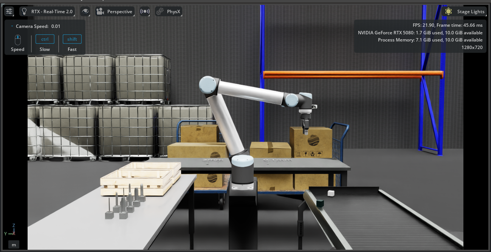
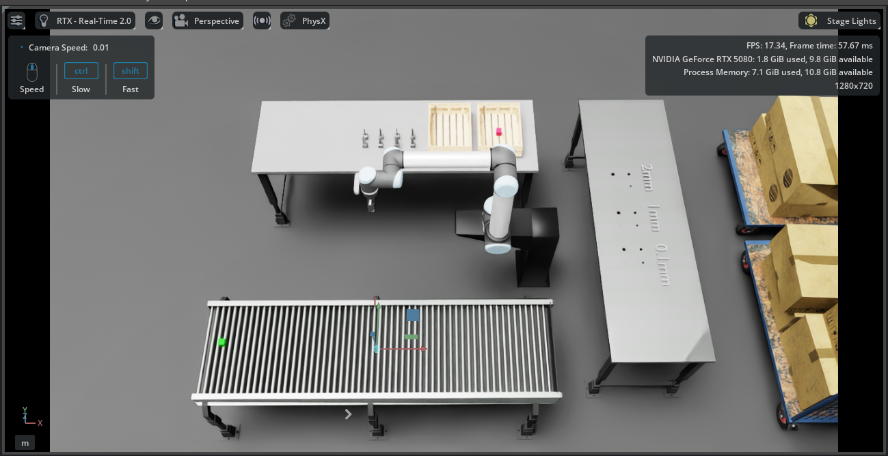
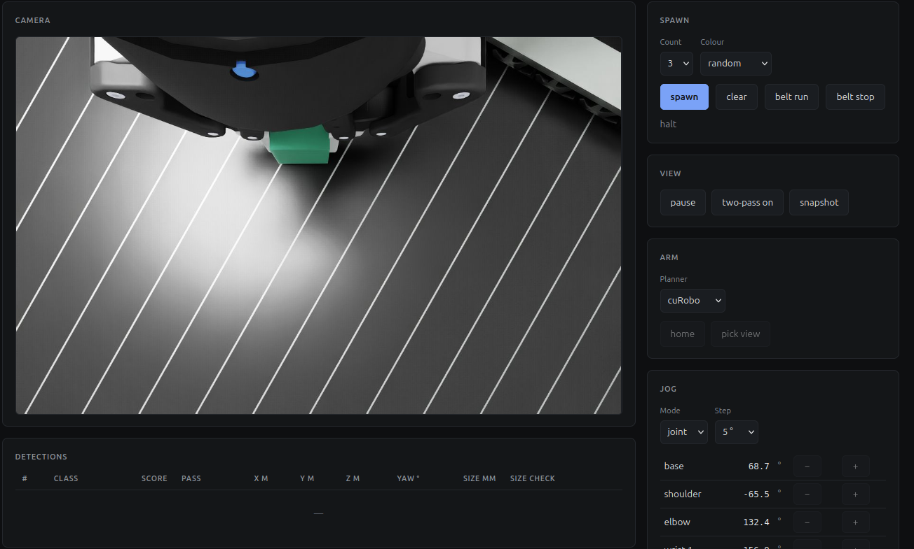
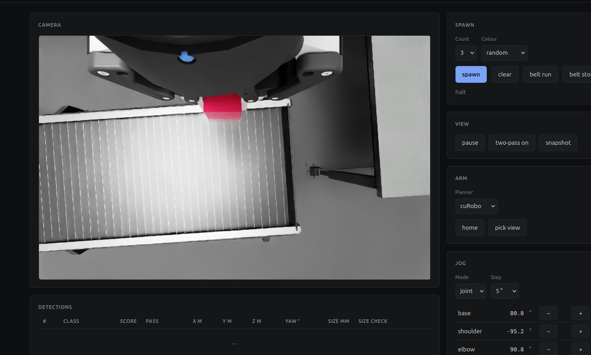
| Area | Status | Detail |
|---|---|---|
| Hand-eye calibration | Fixed | Recalibrated 26 Oct. The 6 mm height error from report 1 is now a 1 to 3 mm residual that depends on the pose (1.2 mm at the pick view). |
| Black boxes | Done | Two-pass detection (normal + colour-inverted image, Subhankar's suggestion) is in the pipeline, with a model retrained on inverted copies: 694 of 695 test boxes, no false detections. |
| Size check (2nd safety layer) | Done | A detection whose measured size does not match a known object is marked a mismatch and not picked (figures below). |
| Gripper TCP and grasp | Done | TCP from the robot model; grasp on a face pair with finger clearance to neighbours; grasp check from where the fingers stop (object width), checked again after the lift. |
| Vision-guided pick | Done | First vision pick on 23 Oct (RoboDK); now pick → lift → hold check → drop in the basket → home. |
| Planner interface (s5) | Done | One request/result format; MoveIt 2, cuRobo and RoboDK as interchangeable backends; shared retiming, metrics, execution and contact stop. |
| Cell obstacles | Done | One obstacle list (floor, belt, tables, baskets) exported from the scene and given identically to all three planners. |
| Benchmark harness | Built, final runs due | Frozen queries from real picks, 30 repetitions, mean ± SD. Final runs with obstacle sets are next. |
| Conveyor | Done (halt-to-pick) | Surface-velocity belt, mini PLC, belt halts for the pick. Picking from a moving belt is still open. |
| Operator dashboard | Done | Live camera with detections, spawn, belt run/stop, planner choice, per-object pick, jog. |
| Peg-in-hole | Under work | Fixture with 2 / 1 / 0.1 mm clearances; insertion still fails at times. |
The full benchmark is still to run, but every pick so far was logged with its plans, timings and outcome, so this data already holds up. A cycle is the complete pick-and-place task: move to the view pose, detect, grasp, lift, check the hold, place the box back, and return.
| RoboDK | MoveIt 2 | cuRobo | |
|---|---|---|---|
| Grasps attempted → object held | 9 / 9 | 20 / 21 * | 11 / 11 |
| Pick and place back, complete cycles | 8 | 8 | 5 |
| Pick and place back, cycle time, s (mean ± SD) | 53.8 ± 2.8 | 56.8 ± 13.8 | 60.5 ± 16.3 ** |
| Cycle time, s, planners kept warm (24 Nov) | – | 44.5 (2 cycles) | 45.0 (2 cycles) |
| Pick to basket, final run: success | – | 5 / 5 | 5 / 5 |
| Pick to basket, cycle time, s | – | 71.2 ± 2.8 | 66.0 ± 2.9 **** |
| Robot motion per cycle (place back), s | 20.9 ± 1.6 | 17.9 ± 1.6 | 17.3 ± 0.4 |
| Planning, free move to the box, ms | 109 ± 73 | 68 ± 19 | 120 ± 95 |
| Planning, straight descent, ms | 952 ± 80 *** | 42 ± 21 | 221 ± 8 |
| Moves executed → arrived on target | 62 / 63 | 148 / 153 | 74 / 79 |
| Median final joint error | 0.002° | 0.003° | 0.002° |
* The one miss: the box moved on the running belt between detection and grasp, which led to the PLC halt (conveyor section); there have been no misses since. A later attempt was refused before the grasp because the finger clearance was only 5 mm. ** Excluding planner start-up; including it, 112 s, which led to the planner daemon. *** RoboDK's straight line then used 5 mm steps plus my IK refinement; it now uses 1 cm steps like the others. RoboDK cycles ran on the previous robot position; MoveIt and cuRobo on the current one. Of the cycle, about 18 to 21 s is robot motion at the shared 0.5 rad/s limit; the rest is detection, gripper actions (1.5 s each) and process start-up, the same for every planner. **** The first cuRobo cycle of the session took 113 s, including the one-time 37 s start-up. The pick-to-basket cycle is longer because the basket is on the far side of the robot: a base swing of about 180° at the shared 0.5 rad/s limit. Most of the moves that did not arrive come from one incident on the day: MoveIt chose a far IK solution, the arm wound into the scene and jammed, and every later move failed until the restart (fixed, see the findings table). Over all three planners: 40 of 41 grasps held; 284 of 295 moves arrived.
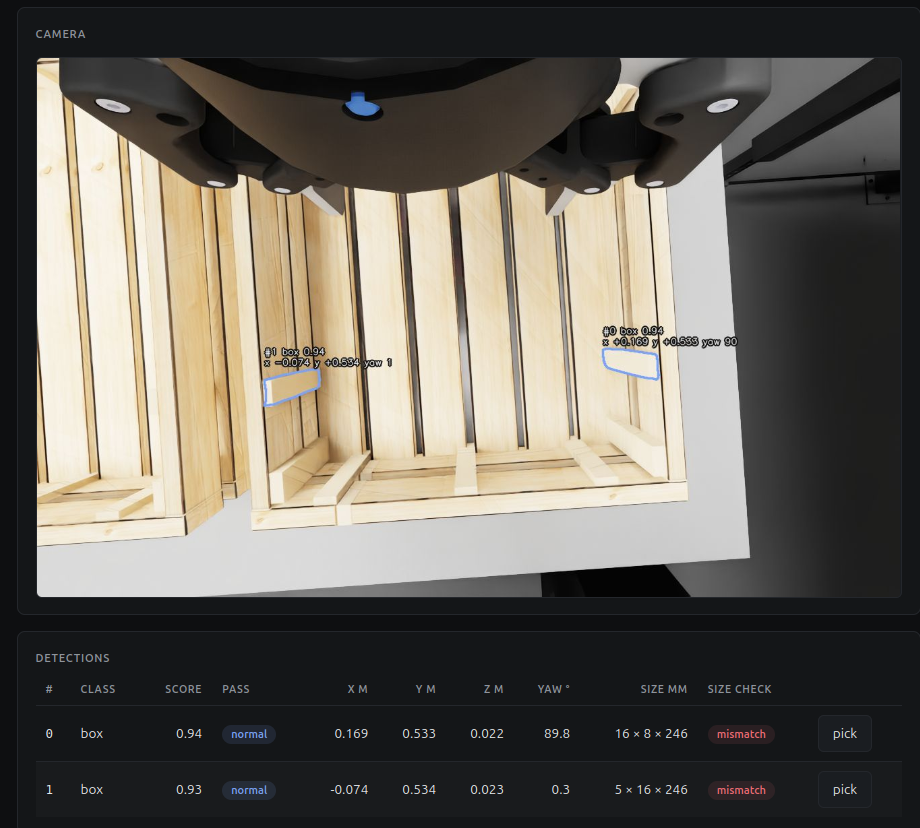
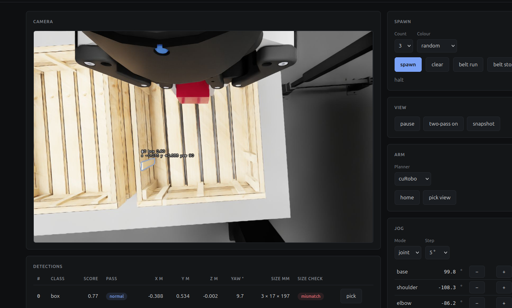
Every move of the pick goes through the same function. The request holds the start joints, the goal (joint angles or a tool pose), the motion type (free or straight line), the shared speed limits and a 5 s timeout. Only the planning itself changes between backends. The retiming (minimum-jerk, scaled to 0.5 rad/s), the metrics, the execution to Isaac at 60 Hz and the contact stop are shared code. That way the benchmark compares planners, not plumbing.
| MoveIt 2 | cuRobo | RoboDK | |
|---|---|---|---|
| Free move | OMPL RRTConnect via move_group (own ROS domain) | GPU trajectory optimisation | Joint move with RoboDK's collision test |
| Straight line | Identical for all: the same Cartesian steps (1 cm / 2°), each planner's own IK and collision check at every step, then refined on the UR10's published kinematics; a joint jump over 0.2 rad means unreachable | ||
| Robot model | UR10 URDF + gripper and camera boxes | UR10 URDF + fitted collision spheres | RoboDK UR10 (up to 2.1 mm off, corrected) |
| Obstacles | The same list for all three, exported from the scene: floor, belt, tables, baskets | ||
Separate from the pick tests above, a plan-only run of the benchmark harness. These numbers are preliminary: plan only, previous robot position (before it moved onto the pedestal), 36 queries recorded from real picks × 30 repetitions, interleaved. RoboDK's column is still to run. The final benchmark will use the new 24 queries and the obstacle sets.
| Move | Success | cuRobo, planning ms | MoveIt 2, planning ms |
|---|---|---|---|
| Approach (free) | 100 % both | 163 ± 30 | 30 ± 9 |
| Descent (straight) | 100 % both | 170 ± 7 | 6 ± 1 |
| Lift (straight) | 100 % both | 18 ± 1 | 6 ± 1 |
| Return (free) | 100 % both | 11 ± 1 | 20 ± 4 |
Findings so far:
base_link is the UR base turned 180° about the vertical. My first goal ended 1 m away until poses were flipped on the way in.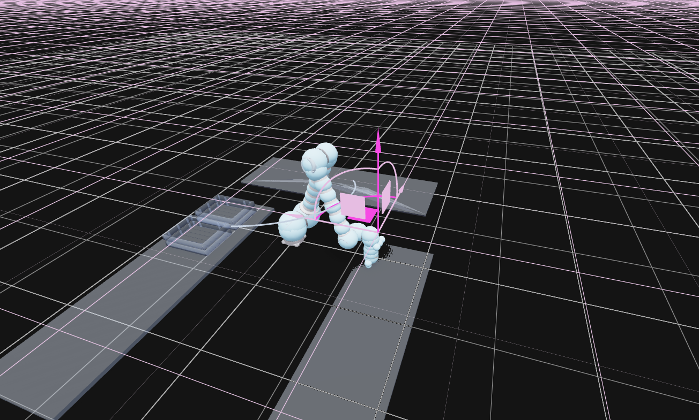
I wanted a conveyor with real physics: rollers driven by a belt or chain, so that box motion comes from contact rather than a script. I tried three ways:
| Method | What happened |
|---|---|
| 1. A joint on every chain link / tooth | The frame rate dropped. The joints had some free play, so the chain always stayed too loose to actually turn the rollers. The conveyor frame itself had to be CAD-designed to keep the roller gears locked in place, or they popped out. |
| 2. Joints on only some links (skip teeth) | The same problems with fewer joints: still slack, still no reliable rotation. |
| 3. No joints: rigid teeth pushed along, like a beyblade launcher's ripcord | The teeth ran out at the end and had to be respawned at the start, and the respawned teeth no longer meshed with the roller teeth. |
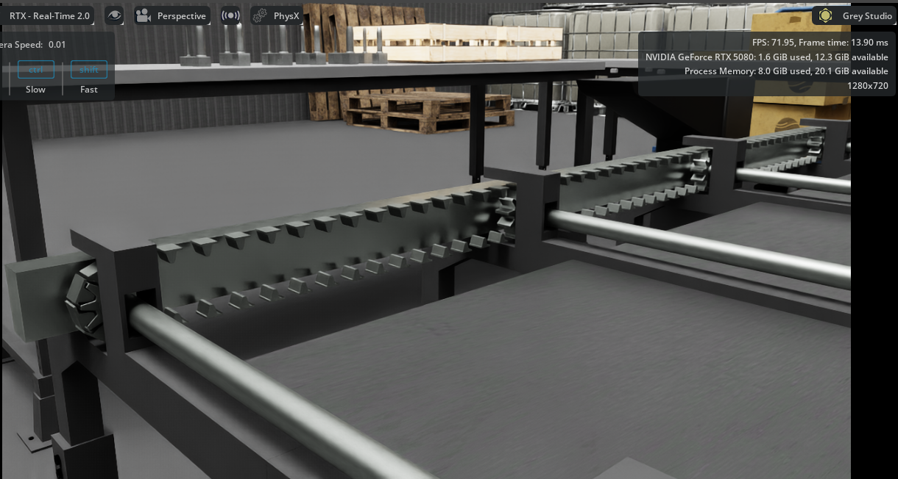
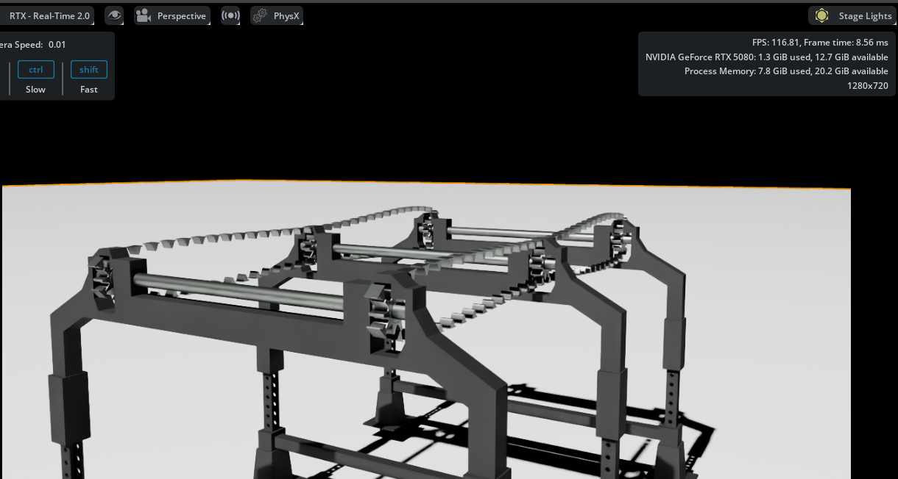
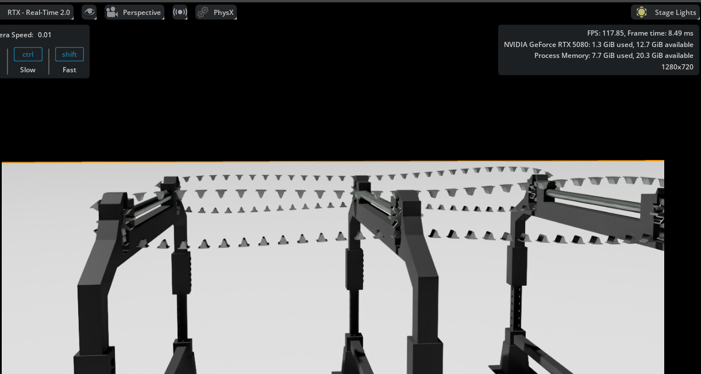
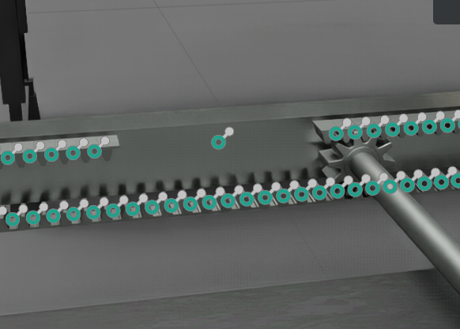
What runs now: the belt is a kinematic body whose velocity acts as a surface velocity (0.03 m/s), so boxes resting on it are carried by friction, at full frame rate. A small mini PLC owns the belt, as a real line's PLC would:
pick_request (written by the robot), run_enable (operator); outputs: the belt speed and its state.pick_request, waits until the PLC reports the belt halted, measures the box on the still belt, picks, and releases the belt however the pick ends.Picking from a moving belt (tracking the box from the belt speed) is still open. For now I halt the belt to pick, a common choice on real lines.
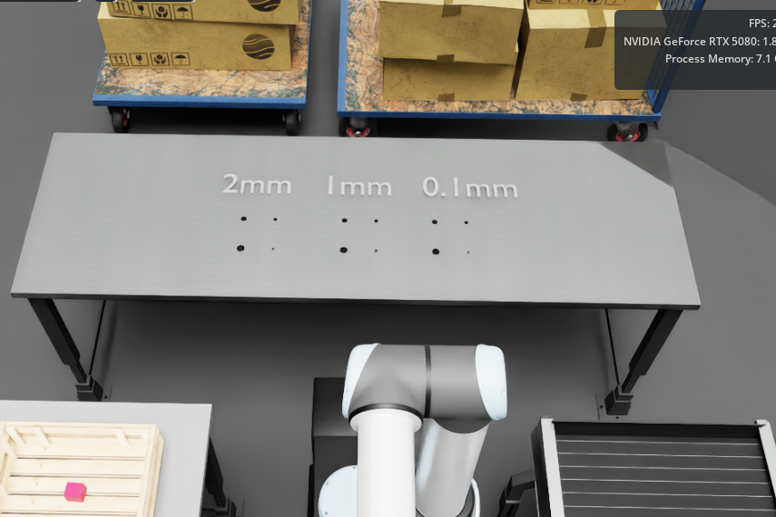
| Problem | Cause | What I did | Lesson |
|---|---|---|---|
| Box slipped out of the grasp; fingers sank about 11 mm into the box | Physics at 60 steps/s too coarse for a two-finger grasp of a 35 mm box | 240 steps/s and a high-friction pad material on the fingers | Check contact physics before blaming the grasp |
| Wrist joint turned against its command on faster moves | Very stiff drives at the coarse physics step | Fixed by the 240 steps/s; contact stop kept as a safety net | Watch commanded vs actual joints |
| Contact stop tripped with no contact | The 0.15 to 0.2 s feedback delay was counted as following error | Compare against the command of 0.2 s ago | Know the latency of your feedback |
| Grasp check passed with nothing held | "Fingers not fully closed" was the test | Expect the fingers to stop at the object's width; check again after the lift | Test for the right answer, not for "not wrong" |
| MoveIt's move to the basket took 74 s and drove the arm into the scene | For a pose goal, MoveIt's goal sampler took a far IK solution (base 4.37, shoulder 5.04 rad): a 56.7 rad joint path | Pose goals become joint goals via the IK solution nearest the start, collision-checked by MoveIt, as RoboDK and cuRobo already do; the drop pose turns with the base swing. Same move now 2.8 to 3.4 rad | Same goal is not enough: the same goal configuration is what makes planners comparable |
| Benchmark made cuRobo 15× too fast | One query repeated 30 times; cuRobo reuses its last solution | Repetitions cycle through all queries | A benchmark must look like the real task |
| cuRobo pick took 5 minutes | Every pick step restarted the planner (37 s each) | Planner daemon: planners stay alive between steps (311 s → 44 s) | Separate start-up cost from planning cost |
| Both detectors suddenly saw nothing | The robot had been moved in the scene; everything taught in its base frame was stale | Re-taught the belt, re-exported obstacles, re-recorded the benchmark queries | After any scene change, check the robot's base pose first |
| No camera, joint or tf topics after an Isaac restart | Isaac loaded all action graphs disabled (cause unknown) | The start-up script switches the graphs on | Check the graphs actually tick, not just that they exist |
| Physical chain/belt conveyor | Joint free play, frame rate, respawned teeth out of mesh (above) | Surface-velocity belt + mini PLC | Model the behaviour the robot needs, not the mechanism |
| RoboDK not reachable from the pipeline | It took another API port; today its license is deactivated | Port search and station check; license to reactivate | Fail loudly, never launch a second instance |
| Boxes rest a few mm above the belt | Not investigated | Accepted for now; grasp heights come from the camera, so picks are unaffected | Note it and move on |